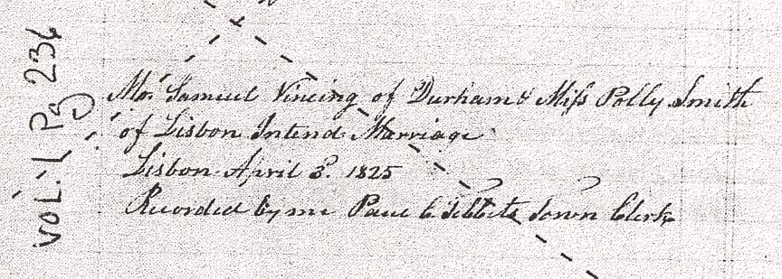
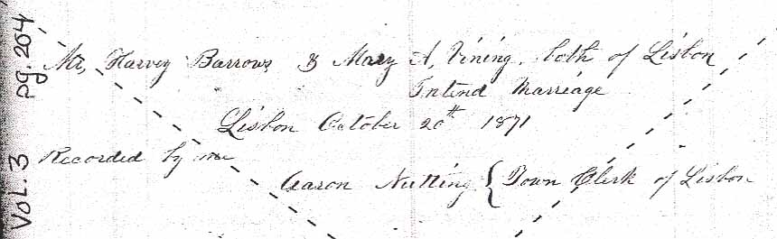
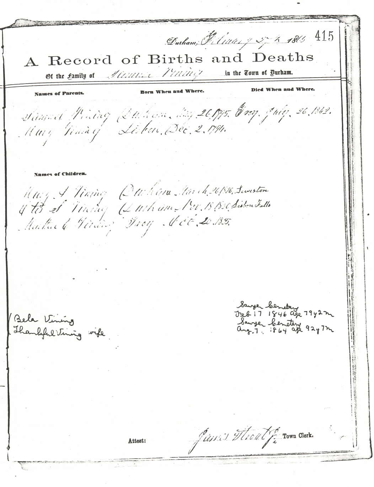
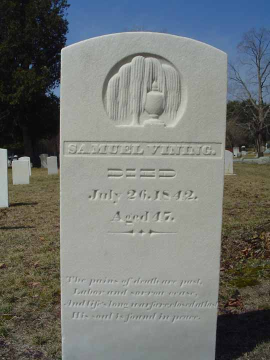
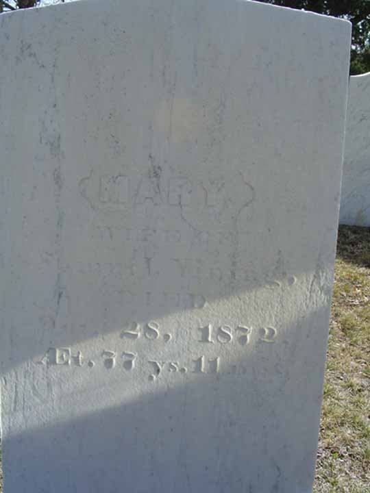
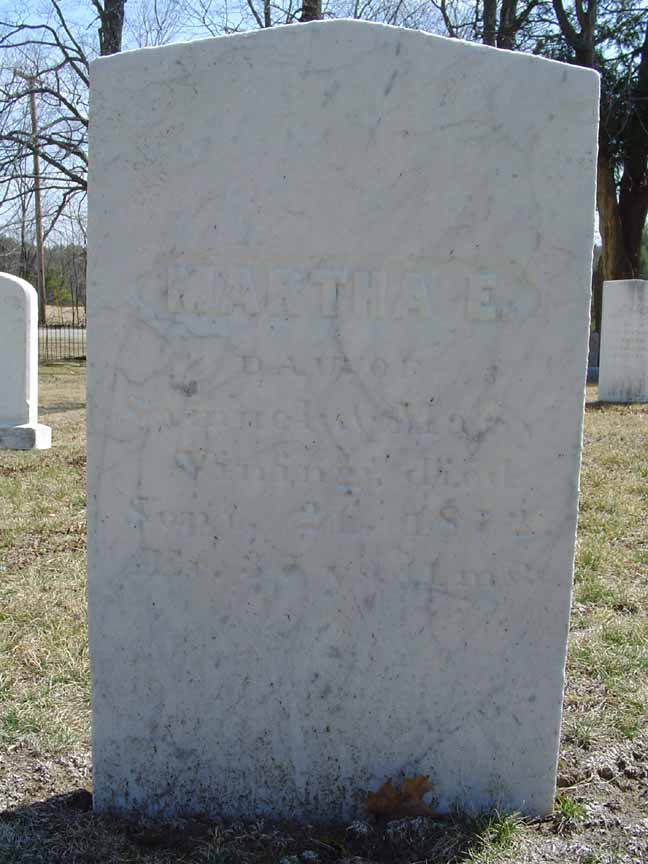

Marriage Data
Marriage intentions of Samuel Vining and Mary “Polly” Smith, from Lisbon, Maine, town records. The dashed diagonal lines are placed there by the town of Lisbon to show that it is not a certified record.

Family Data
The town of Durham, Androscoggin County, Maine, has photocopied its vital record books, and those photocopies are available for public viewing. Unfortunately, much of the photocopied material is very difficult to impossible to read. Below is the page (greatly enlarged) recording the family of Samuel Vining and Mary “Polly” Smith. The information on this page was entered by what appears to be at least two individuals, but all the information on Samuel and Mary's family are by one person. These earliest (and lightest) entries were made on 5 February 1865 by James Strout Jr., the town clerk, and recorded events that occurred from a decade to nearly 70 years earlier.
Census Data
| 1830 | 1840 | 1850 | 1860 | 1870 | 1880 | |
| Samuel Vining | 30–40 | ? | dead | |||
| Mary “Polly” (Smith) Vining | 30–40 | ? | 55 | 65 | 76 [see note below] |
dead |
| Mary A. Vining | under 5 | ? | 24 | 34 | 44 [see note below] |
dead |
| Otis S. Vining | ? | 19 | married and living in separate household | |||
| Martha Elizabeth Vining | ? | 14 | 24 | 34 [see note below] |
dead |


Death Data
Gravestones for Samuel Vining and Mary “Polly” Smith, in Lisbon Cemetery, Lisbon, Androscoggin County, Maine:

